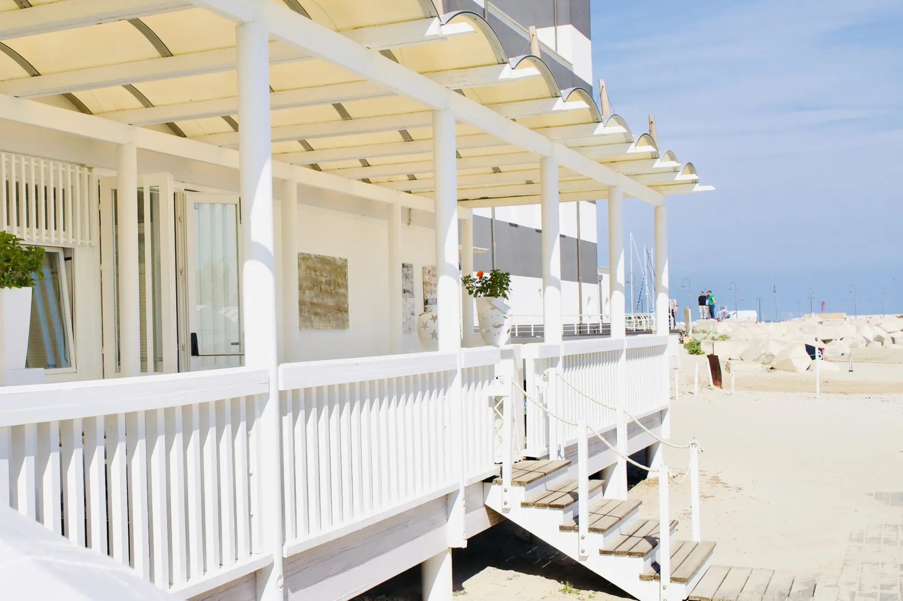
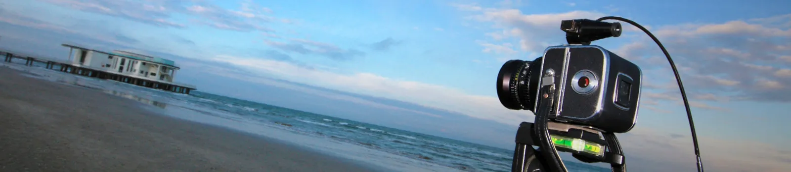
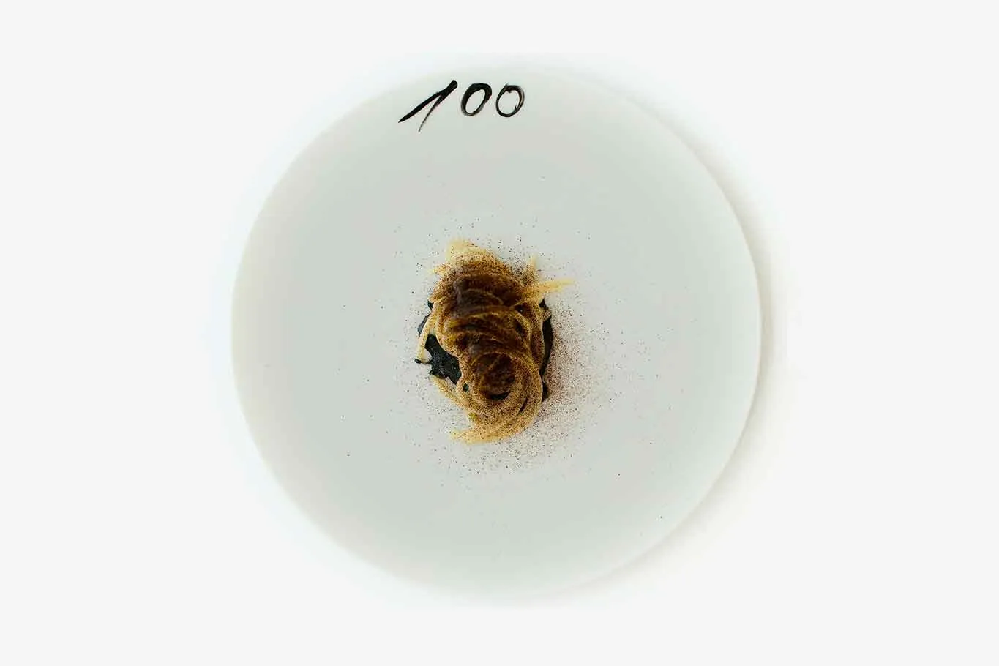
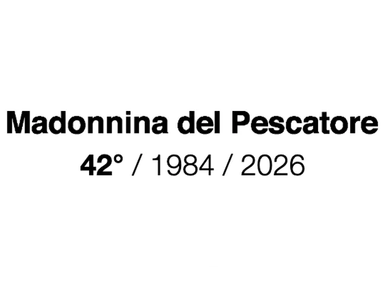

Check in, then walk straight out to the Rotonda a Mare — the 1933 rationalist pavilion on the water, free exhibitions June–September. Watch the Adriatic light turn. Aperitivo at the Foro Annonario: 24 Doric columns, a daily market by day and wine bars by night. Your starred reservation is already made.[10]

Your starred reservation anchors the weekend's shape. Uliassi (3★) sits between the harbour canal and the beach — Lab 2026 runs colour-coded courses in Beige, Bianco, Verde, Nero, Giallo, dedicated to Mario Giacomelli's centenary.[7] Or Madonnina del Pescatore (2★) 7 km south in Marzocca — the Marco Polo menu routes from Venice to Beijing.[24]

The Spiaggia di Velluto: 13 km of very fine golden sand, Blue Flag since 1997, shallow and current-free. The shore runs Ponente (west) and Levante (east) off the Lungomare Mameli promenade. Morning is the best light — and the quietest hour before beach clubs fill.[8]
Flat half-day on foot. Rocca Roveresca (€5, daily 8:30–19:30) — Renaissance fortress by Laurana and Pontelli, view from the towers. Walk to the circular Foro Annonario (24 Doric columns, 1834), then under the Portici Ercolani — 126 Istrian-stone arches along the Misa river.[13]

Palazzo del Duca: the MUSINF collection moved here while its building is renovated — permanent Giacomelli exhibition, free entry.[15] Mario Giacomelli (1925–2000) was born here; his Scanno and Io non ho mani che mi accarezzino il viso series are among the defining works of 20th-century Italian photography. Uliassi's Lab 2026 uses his tonal palette as a menu structure — the same Nero as tonight's course.[7]
With a car: Corinaldo + Mondavio (~20 min) for intact Renaissance walls and the Pozzo della Polenta staircase — one of Italy's most beautiful villages, pair of fortresses, back before lunch.[19] Full-day option: Urbino (~52 min) — UNESCO Palazzo Ducale, Piero della Francesca's Flagellation and Madonna di Senigallia, Raphael's birthplace.[20]
Mario Giacomelli was born in Senigallia in 1925 and donated his complete photographic anthology (250 prints) to the city's MUSINF, including the Scanno series and Io non ho mani che mi accarezzino il viso. He co-founded the Misa Photographic School here in the 1950s. Uliassi's Lab 2026 menu is dedicated to his centenary — colour-coded courses in his tonal signature. Spend Scene 05 with his photographs, then sit down in Scene 02 and eat them. This pairing is not in any promotional material; it emerged from reading the research together.[7][14]
